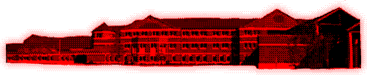

Hello , I'm Andre . Trying my hand at the whole website thing . I'm not very good at coding but I fucking hate social media , hopefully this will be a more private place I can use to be myself and do the things I like without having to bother with dealing with people or censorship . So if you're seeing this site congrats , I like you . My lovely boyfriend is my biggest inspiration and my muse , without it this site would not be possible nor would my desire to create a space like this . Check out her site here ! Hoping to log my shit and share my shit , check it all out using the buttons bellow .


Im not really sure what to put here or say . So whatever . My accounts keep getting nuked ( people are too worried about fake victims and fake violence ) ... I want a corner of the internet where I don't have to worry about all that but can still share myself with friends I care about . Will be as honest as I can be , or at least try to be . I want this to immortalize me and who I was , am , and will be . May this site grow with me as I move forward . I've never had a space where I felt I could truly do that so be warned . You will get all of me I can bear to share .
